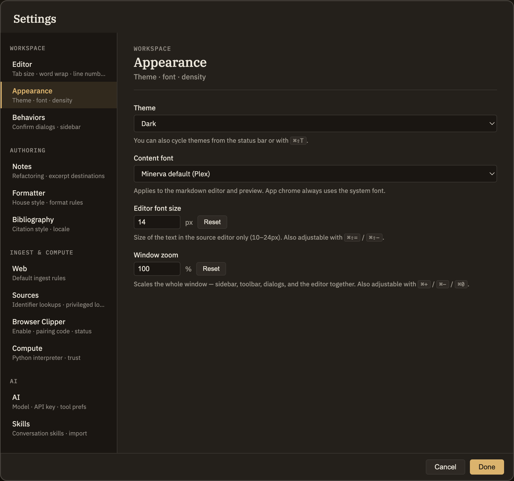

Docs/Viewing options/Themes
Themes
A theme sets how the whole app looks. Minerva offers three — Dark, Light, and High Contrast — plus a System option that follows your computer's own light-or-dark setting. Switching is instant and applies everywhere; there's no per-note override.
The themes
Dark (default)
A warm, dark look: deep ink backgrounds, soft warm-white text, and a honeyed amber accent.
Light
The same warm palette on a pale paper background, with darker text — the daytime twin of the dark theme rather than a plain white mode.
High Contrast
A stark, high-legibility black-on-white look with strong, clearly separated colors. Built for readability first.
System
Follows your computer's light or dark setting, and updates on its own if you change that setting while Minerva is open. This is what you start with on a fresh install.
Switching themes
Change the theme any of three ways — the change takes effect right away:
Settings → Appearance
Open Settings, go to the Appearance tab, and pick a theme from the Theme menu. It applies as you choose — there's no confirm step.
Status bar
Click the theme name at the bottom of the window to open a quick picker, then click the one you want.
⌘⇧T
Cycles through Dark, Light, High Contrast, and System without opening a menu.
Your theme choice is remembered on this computer. It's a personal appearance setting, so it isn't part of your notes and won't follow them to another device.
